Introducing Owlcat Introducing Owlcat
Introducing Owlcat Introducing OwlcatLogged on 02/27/2010 02:12:41 AM
OWLCAT stands for Oleg's W--- Lightweight Calibration & Analysis Toolkit. The W can represent Wisely, Wantonly, Woefully, Weirdly, Wonderfully, Wickedly, Wobbly, Wankingly, Warp 9, or Whatever suits your mood. Owlcat is a bunch of scripts I wrote to help me reduce data. Of these, plot-ms.py, flag-ms.py and plot-parms.py are probably the most useful.
Owlcat is (currently) in my Waterhole, so if you want to use it, you must first check it out:
$ svn co svn://lofar9.astron.nl/var/svn/repos/trunk/Waterhole/contrib/OMS/Owlcat
This will create a directory called Owlcat. Now, make sure this directory is both in your PYTHONPATH and PATH.
Before you go any further, please make sure you've got Pylab/Matplotlib installed (Ubuntu package python-matplotlib), and have a copy of the MeqTrees Cattery scripts (svn co svn://lofar9.astron.nl/var/svn/repos/trunk/Frameworks/Cattery. No working MeqTrees required, just a copy of the Cattery python scripts.) Owlcat will not work without these.
owlcat-logo.jpg: The Owlcat logo |
Different kinds of plotsLogged on 02/27/2010 02:23:58 AM
Currently, the most versatile tool in the toolkit is the plot-ms.py script. To try it out, arm yourself with an MS. I will provide some examples based on the 3C147_spw0.MS, which you can download here:
http://www.astron.nl/meqwiki-data/users/oms/3C147-Calibration-Tutorial/3C147_spw0.MS.tgz
For starters, try
$ plot-ms.py -h
This just to let you know that there's many options, and I've tried to document them all. Don't bother reading them in detail, just type
$ plot-ms.py 3C147_spw0.MS
to make your first plot. This is a plot of the mean Stokes I (|XX|+|YY|) in the CORRECTED_DATA column, as a function of time, averaged over all frequencies. Note how data from individual baselines is stacked up and sorted by baseline length.
The plot is displayed in a window. Close the window to exit the script. To save the plot to a file, use the -o option:
$ plot-ms.py 3C147_spw0.MS -o plot1.png
Besides .png, you can also use .ps, .eps, .svg, and whatever else is supported by matplotlib -- see matplotlib documentation. For PostScript output, you can set paper size, plot size, etc -- see the help for details.
Now, this was a plot of mean Stokes I in CORRECTED_DATA. This is the default plot type made when nothing else is specified. To make different plots, you must specify them on the command line after the MS name, as "column:plottype". For example
$ plot-ms.py 3C147_spw0.MS DATA:XX DATA:YY
makes two plots, of mean |XX| and |YY| in the DATA column. Note the label at the top of the plot, which gives a bunch of details.
Instead of the mean |XX| in frequency, you can also plot standard deviations:
$ plot-ms.py 3C147_spw0.MS DATA:XX.std
Other functions you can try are .min, .max and .sum. The default plot (plot 1) is equivalent to CORRECTED_DATA:I.mean. Finally, try:
$ plot-ms.py 3C147_spw0.MS CORRECTED_DATA.mean:I
and see if you can spot the difference. In plot 1, we plotted mean amplitudes, here we plot the amplitude of the (complex) mean visibility. This is an important distinction (for starters, the mean complex visibility always tends to be smaller, as it is a vector sum that tends to "wash out" due to the phase component.)! The positioning of ".mean" determines whether it applies to the column (i.e. visibilities), or to the amplitudes.
The previous plots were a function of time & averaged in frequency. To plot things as a function of frequency (averaged in time), use the --x-freq option. This will show you the time-frequency amplitude and phase bandpasses:
$ plot-ms.py 3C147_spw0.MS DATA:XX XXphase --x-freq
The gap in the plot is due to a flagged channel. To ignore flags (i.e. plot flagged data anyway), use the -F option. Note that this may impact the scale of your plot (which is chosen automatically based on the variation in the plotted data.)
Speaking of flags, another interesting plot type is the flag density plot. This shows the fraction of visibilities flagged per time slot or frequency channel. Use
$ plot-ms.py 3C147_spw0.MS flags_XX
to get a flag-density plot for XX (as a function of time.) Add the --x-freq option to plot it as a function of frequency. If you're flagging RFI, these kinds of plots are a nice way to see the bad timeslots and frequency channels.
Finally, note that all the different available plot types may be listed by running plot-ms.py --list-plots.
 |
plot1.png: our first plot: plot-ms.py 3C147_spw0.MS |
 |
plot2.0.png: second plot: plot-ms.py 3C147_spw0.MS DATA:XX DATA:YY |
 |
plot2.1.png: ...and page 2 of the above |
 |
plot3.png: plot-ms.py 3C147_spw0.MS DATA:XX.std |
 |
plot4.png: plot-ms.py 3C147_spw0.MS CORRECTED_DATA.mean:I |
 |
plot5.0.png: plot-ms.py 3C147_spw0.MS DATA:XX XXphase --x-freq |
 |
plot5.1.png: ...and page 2 of the above |
 |
plot6.0.png: plot-ms.py 3C147_spw0.MS DATA:XX XXphase --x-freq -F |
 |
plot6.1.png: ...and page 2 of the above |
 |
plot7.png: plot-ms.py 3C147_spw0.MS flags_XX |
 |
plot8.png: plot-ms.py 3C147_spw0.MS flags_XX --x-freq |
Data selectionLogged on 02/27/2010 11:41:07 PM
Note the sawtooth pattern in the last flag density plot of the previous entry. This is due to this particular MS having every second channel flagged (in tribute to a long-gone imager bug.) We can use the -L option to select only the "good" channels.
$ plot-ms.py 3C147_spw0.MS flags_XX --x-freq -L 3~55:2
The -L option expects a single channel number, or a 'start~end' range ('end' is inclusive), or a 'start~end:step' specification like the above. If you're used to thinking in terms of Python slices (where N:M means from N up to and NOT including M), you can use the 'start:end' or 'start:end:step' syntax instead -- the first ':' indicates that 'end' is to be interpreted in the Pythonic "+1" sense. And, as you would expect, "10~" or "10:" means from 10 till the end, "10~:2" or "10::2" means from 10 till the end with a stepping of 2, and "~9" or ":10" means 0 to 9.
The -T option works the same way for timeslot numbers. To select the first 120 timeslots, try:
$ plot-ms.py 3C147_spw0.MS DATA:XX -L 3:55:2 -T 0~119 # or 0:120, or just :120 for the Pythonic way
The next selection option is -I, to select interferometers. This uses the standard Meow.IfrSet object, and so has the same flexible syntax as the interferometer selector in all Siamese and Calico scripts. To get a summary of the syntax run:
$ plot-ms.py 3C147_spw0.MS -I help
In the examples below, we use -I "-<300* -C*" to select all baselines except those shorter than 300m and those with antenna C, "C* -CD" to select all baselines with C except C-D, and "F-M -7*" to select the standard WSRT set of fixed-movable baselines, but omit those with antenna 7.
Another data selection option is -D, to use with MSs that contain multiple DATA_DESC_IDs (these usually correspond to spectral windows.) The default is to use the first DDID in your MS (usually 0). You can also specify "-D all" or "-D 0,1,2" to plot data for multiple DDIDs (our test MS contains only DDID 0). Note that different DDIDs normally go on separate plot pages, but you can also ask the script to average them together. We'll learn about this later on in the tutorial.
Finally, the -Q option can be used to refine your data selection further through the use of TaQL queries. For example:
$ plot-ms.py 3C147_spw0.MS -Q "ANTENNA1==1"
is just another way of selecting all baselines where antenna 1 is the first element (equivalent to -I "1* -01"). TaQL is an SQL-like language for querying MSs. It is fully documented here: http://www.astron.nl/casacore/trunk/casacore/doc/notes/199.html.
| 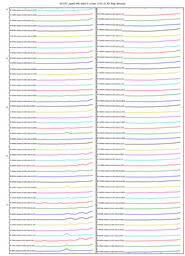 | plot9.png: plot-ms.py 3C147_spw0.MS flags_XX --x-freq -L 3~55:2 |
| 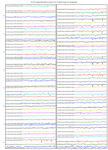 | plot10.png: plot-ms.py 3C147_spw0.MS DATA:XX -L 3~55:2 -T 0~119 |
| 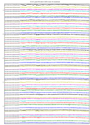 | plot11.png: plot-ms.py 3C147_spw0.MS DATA:XX -I ''-<300 -C*'' |
| 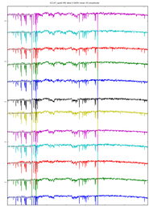 | plot12.png: plot-ms.py 3C147_spw0.MS DATA:XX -I ''C* -CD'' |
| 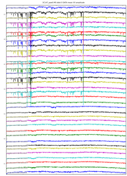 | plot13.png: plot-ms.py 3C147_spw0.MS DATA:XX -I ''F-M -7*'' |
| 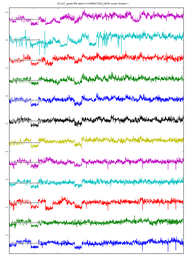 | plot14.png: plot-ms.py 3C147_spw0.MS -Q ''ANTENNA1==1'' |
Arranging plotsLogged on 03/03/2010 12:46:53 AM
Normally, a command like
$ plot-ms.py 3C147_spw0.MS DATA:XX YY -I "C*"
will produce two separate plot pages: one for |XX| and one for |YY|. The "-S" option can be used to stack the different plot types onto the same page. By default, only baselines are stacked, but the following command:
$ plot-ms.py 3C147_spw0.MS DATA:XX YY -I "C*" -S plot
tells plot-ms to stack the plot types as well. To change the order in which the plots are stacked w.r.t.each other, you can give the -S option several times. For example, this will stack plots first by type, then by baseline:
$ plot-ms.py 3C147_spw0.MS DATA:XX YY -I "C*" -S plot -S ifr
You can also put different baselines on different plot page by using the -P option. (Make sure you don't specify too many baselines in this case.) Try this:
$ plot-ms.py 3C147_spw0.MS DATA:XX YY -I "AB CD" -S plot -P ifr --size 20x10
(Note that we use the "--size" option to adjust the size of the plots.) Finally, the -A option can be used to average baselines together instead of stacking them:
$ plot-ms.py 3C147_spw0.MS DATA:XX YY -S plot -A ifr --size 20x10
And of course the same -P/-S/-A options can also apply to multiple DDIDs (i.e. spectral windows), if your MS happens to contain them.
This concludes our tutorial for the plot-ms tool. There are a few more obscure command-line options, you can use "plot-ms.py -h" to look them up.
| 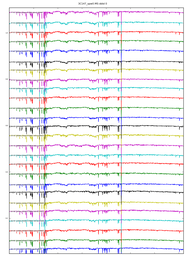 | plot15.png: plot-ms.py 3C147_spw0.MS DATA:XX YY -I "C*" -S plot |
| 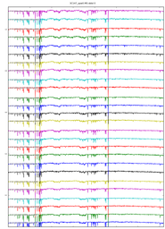 | plot16.png: plot-ms.py 3C147_spw0.MS DATA:XX YY -I "C*" -S plot -S ifr |
| 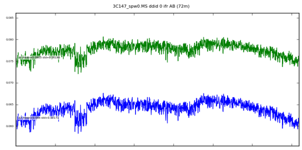 | plot17.0.png: plot-ms.py 3C147_spw0.MS DATA:XX YY -I "AB CD" -S plot -P ifr --size 20x10 |
| 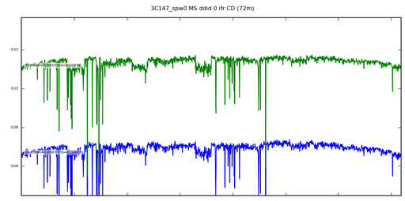 | plot17.1.png: page 2 of the above |
| 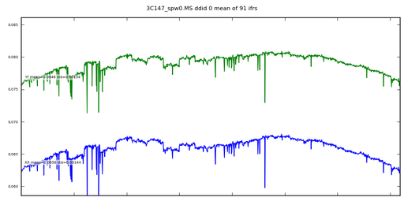 | plot18.png: plot-ms.py 3C147_spw0.MS DATA:XX YY -S plot -A ifr --size 20x10 |
{kind=link}
{kind=link}
{kind=link}
{kind=link}
{kind=link}
{kind=link}
{kind=link}
{kind=link}
{kind=link}
{kind=link}
{kind=link}
{kind=link}